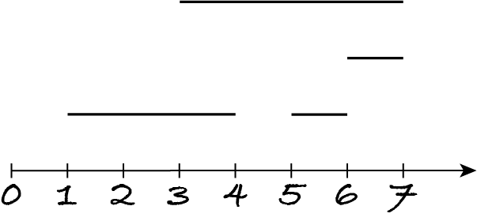
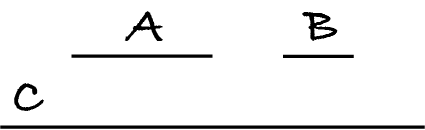
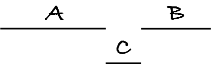
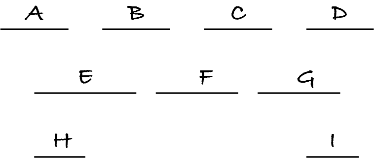
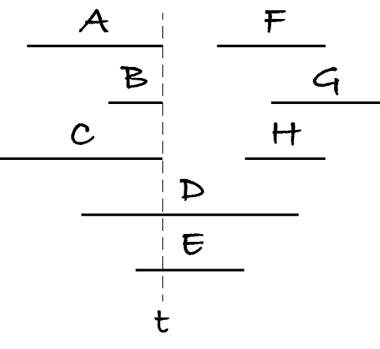

18.1. Interval scheduling
After a long lockdown, Alice is keen to attend as many music festivals as possible. She has the start and end date of each festival she’d like to attend. What is a largest subset of festivals she can attend?
Consider groups of people trying to book a particular room for their meetings. Given the start and end time of each meeting, what’s the largest number of meetings that can be scheduled for that room?
In general, the interval scheduling problem is: given a set of time intervals, find a largest subset without overlaps. Two time intervals overlap if they have at least one time point in common, e.g. if the end time of one interval is part of the other interval.
To simplify, I will represent time points as natural numbers and time intervals as pairs of start–end points, e.g. (3, 5) is the interval starting at time point 3 and ending at time point 5.
schedule is a subset of intervals
for any (\(s_1\), \(e_1\)) ≠ (\(s_2\), \(e_2\)) in schedule, either \(e_1\) < \(s_2\) or \(e_2\) < \(s_1\)
no subset of intervals satisfying condition 2 is larger than schedule
The second postcondition states that for any two intervals in the solution, one must end before the other starts. The third postcondition states that the output has as many intervals as possible.
The problem definition uses the word ‘Operation’ instead of ‘Function’ because we’re not defining a mathematical function: a set of intervals may lead to several largest schedules as the next table shows. An algorithm can return any of them.
Case |
intervals |
schedule |
|---|---|---|
no intervals |
{} |
{} |
one interval |
{(9, 17)} |
{(9, 17)} |
no overlap |
{(4, 5), (0, 1), (2, 3)} |
{(4, 5), (0, 1), (2, 3)} |
some overlap |
{(6, 10), (9, 17), (0, 5)} |
{(6, 10), (0, 5)} or {(9, 17), (0, 5)} |
all overlap |
{(3, 5), (5, 6), (2, 7)} |
{(3, 5)} or {(5, 6)} or {(2, 7)} |
18.1.1. The greedy approach
A greedy algorithm constructs the output collection one item at a time. It first finds all items that are compatible with the choices made so far. For the knapsack problem, it’s those items that still fit in the knapsack. For interval scheduling, it’s those intervals that don’t overlap any already scheduled interval. I will call those items the extensions to the current partial solution.
Once the algorithm has computed the extensions, it makes a greedy choice: it chooses the best extension, or a single best one if there are several equally good options. The criterion used by the greedy choice is the crux of the algorithm; I’ll come to it later.
The algorithm continues choosing a best item among those compatible with previous choices, until the solution is complete. This is certainly the case when no more items are available, but depending on the problem the solution may be completed earlier.
A general algorithmic pattern for greedy algorithms is:
let solution be an empty collection
repeat:
let extensions be the possible next items compatible with solution
if extensions isn’t empty:
add one of the best of extensions to solution
until extensions is empty
This algorithm is computing the extensions from scratch in each iteration. Often, we know the possible extensions in advance (they’re the input items) and we just want to add the next best one to the solution. I gave an example in the introduction: we take the next most valuable item and put it in the knapsack if it fits.
For such problems, a more efficient greedy algorithm constructs the extensions once, by sorting the input items from best to worst. It then keeps picking the next best item, checks if it’s compatible with the partial solution, and if so extends the solution with that item.
let solution be an empty collection
let extensions be the input items sorted from best to worst
for each item in extensions:
if item is compatible with solution:
add item to solution
The greedy algorithm I outlined in the introduction for the knapsack problem is:
let solution be the empty set
let extensions be the input items sorted from most to least valuable
for each item in extensions:
if weight of item + weight of solution ≤ capacity of knapsack:
add item to solution
Note: Greedy algorithms sometimes involve sorting the input.
Exhaustive search generates all possible candidates (unless it can stop early), to make sure it finds the best one. Greedy algorithms generate a single candidate: they don’t explore alternatives. They can’t be used when the problem asks for several best solution, e.g. if we wanted to know all largest subsets of non-overlapping intervals.
Exhaustive search generates in each iteration a complete candidate and tests it. Greedy algorithms extend a partial candidate by one item per iteration and they don’t test the candidate at the end. If the greedy choice is correct, the generated candidate is a best solution.
18.1.2. Greedy choices
Let’s now think about the greedy choice for the interval scheduling problem.
We want to select as many intervals as possible. One possible choice is to select the interval that starts earliest, so that we’re not idle. Consider the intervals in the following figure.
Processing them by ascending start time, i.e. from left to right in the figure, the algorithm:
adds (1, 4) to the empty schedule
skips (3, 7) because it overlaps with (1, 4)
adds (5, 6) to the schedule because it doesn’t overlap (1, 4)
skips (6, 7) because it overlaps (5, 6) at time point 6.
The algorithm produces the schedule {(1,4), (5,6)}; it’s a correct solution. No schedule with three intervals is possible.
Unfortunately, choosing the earliest start doesn’t always lead to a solution, as the next figure shows. The long interval C starts first but choosing it prevents finding the largest schedule, with intervals A and B.
Well, if a single long interval prevents choosing several smaller intervals, let’s choose as the best interval the shortest one. Alas, this isn’t correct either, as the next figure shows. The shortest interval, C, overlaps intervals A and B at two time points: C starts when A ends and C ends when B starts. Therefore, choosing C first prevents finding the largest schedule {A, B}.
These counter-examples suggest we should choose the interval with the fewest overlaps, to remove the fewest other intervals. This sounds reasonable, but there’s a counter-example for that. Consider the nine intervals in the following figure.
All intervals except E and G overlap two other intervals. The algorithm could choose any of them first, but if it chooses F, which eliminates B and C, the algorithm will only find a three-interval subset like {A, F, I} and not a four-interval solution like {A, B, C, D}.
Another possible choice is to pick the interval ending soonest, as that maximises the remaining time, allowing more intervals to be picked. Sorting the nine intervals by end time we get sequence (A, H, E, B, F, C, G, I, D). The algorithm adds A, skips H and E because they overlap A, adds B and thus skips F, adds C and then skips G, and finally adds I which forces D to be skipped. The output schedule is {A, B, C, I}, which satisfies the postconditions.
Choosing the interval ending soonest always leads to a largest subset. To understand why, consider the following diagram where t is the lowest ending time of all intervals.
Each interval belongs to one of three groups:
it ends at t, like intervals A, B, and C
it starts before t and ends after t, like intervals D and E
it starts after t, like intervals F, G and H.
All intervals in the first two groups overlap each other, so the largest schedule has at most one of them, no matter how the intervals are chosen. If the algorithm chooses an interval in the second group, it may overlap with an interval in the third group, e.g. E overlaps with F, whereas the first and third groups never overlap. Thus, choosing any of the intervals ending soonest, at t, doesn’t lead to fewer intervals in the schedule than any other choice, which means it’s a largest schedule.
Note: Usually, there are several greedy choices for a problem, but possibly only one (or even none) will lead to a correct solution.
Proving that a greedy algorithm is correct can be hard; you won’t be asked to do it. Proving that it’s incorrect is usually relatively easy because a single counter-example will do. In his book The Algorithm Design Manual, Steven Skiena suggests four approaches for coming up with counter-examples.
Think small: Algorithms fail under very particular conditions, which can be illustrated with small problem instances.
Think exhaustively: There are only three ways to combine intervals (overlap, containment, disjoint); they can be used to construct examples systematically, e.g. one interval overlaps and thereby eliminates two other intervals.
Go for a tie: Greedy algorithms choose the best extension, but if there are several best ones, the algorithm may choose the wrong one.
Seek extremes: Counter-examples sometimes include items with opposite properties, like small and large, or long and short. For example, a long interval prevents choosing several small ones.
Note: Try constructing counter-examples that are small, contain items that are tied for being the best, or contain extreme items.
A counter-example reveals subtle conditions that make one greedy choice lead to an incorrect output. Thus they’re good tests to check other greedy choices. For example, I checked the correct choice (interval ending soonest) on the counter-example for choosing the interval with fewest overlaps. You can check that the correct greedy choice also handles the counter-examples for choosing the interval starting soonest and for choosing the shortest interval.
Note: As you think of possible greedy choices, add counter-examples to a test table and check each greedy choice against them.
Exercise 18.1.1
In the introduction, I gave a greedy choice for the 0/1 knapsack problem: at each step take the most valuable remaining item that fits the knapsack. To do that we can initially sort the items by descending value. I also showed a counter-example for this choice.
Here are two other greedy choices:
Take the lightest item to keep space for more items, i.e. sort by ascending weight.
Take the most profitable item, i.e. sort by descending value-to-weight ratio.
For each greedy choice, provide a counter-example: a set of items and a knapsack capacity for which the greedy choice won’t maximise the value of the items that can be carried.
18.1.3. Algorithm
Now that we have a greedy choice that leads to a largest schedule, we can apply the second greedy algorithmic pattern to interval scheduling, because the possible extensions are the intervals given in the input.
let schedule be the empty set
let extensions be intervals in ascending end time
for each interval in extensions:
if interval is compatible with schedule:
add interval to schedule
One way to implement step 3.1 is to check if the extension interval doesn’t overlap any already scheduled interval. That takes linear time in the size of the partial schedule. We should try to exploit the sorted order for a more efficient approach.
When explaining why the algorithm is correct, I noted that only the intervals starting after the soonest ending time t are compatible with the intervals ending at t. So, if we keep the end time of the latest interval scheduled so far, we can easily check if the extension interval being considered is compatible.
let schedule be the empty set
let extensions be the intervals in ascending end time
let last be −1
for each interval in extensions:
if the start of interval > last:
add interval to schedule
let last be the end of interval
What’s a worst-case scenario for this algorithm?
The algorithm does most work when no pair of intervals overlaps. In that scenario, the algorithm adds all intervals to the schedule.
Exercise 18.1.2
What’s the worst-case complexity of the algorithm? Use i = │intervals│ for the size of the input.
Exercise 18.1.3 (optional)
Implement and test the algorithm. Write a test table with the above problem instances and counter-examples.
Exercise 18.1.4 (optional)
To appreciate how efficient the greedy approach is, outline an exhaustive search algorithm and explain its worst-case complexity.